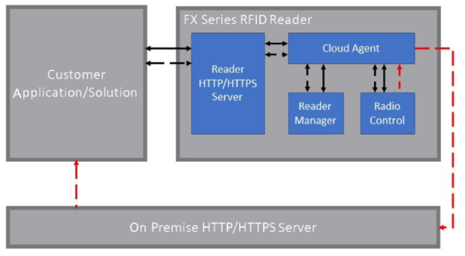
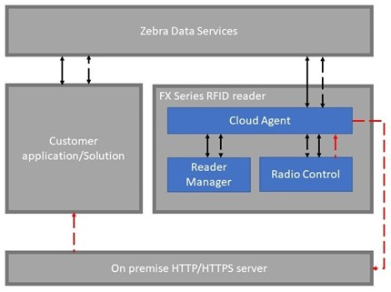

Pure Cloud Deployment¶
In a Pure Cloud deployment, the Management, Control, and Data interfaces of the Zebra IoT Connector feature are all configured to connect to the cloud services platform.
Zebra IoT Connector also enables a configuration to connect with IoT services offered by Zebra Data Services and major public cloud platforms like Google Cloud Platform, Amazon Web Services, IBM Cloud and Microsoft Azure.
Figure illustrates a Pure Cloud deployment and the flow of different interfaces.
Important
The solid lines in Figure represent the Management interfaces, the dotted black lines represent the Control interface and the dotted red lines represent the Data interface.
Zebra Data Services (ZDS)¶
The Zebra IoT Connector feature enables the Cloud connectivity to Zebra Data Services. Zebra Data Services is Zebra’s proprietary cloud platform that empowers the user to build secure, scalable digital services with ease and speed. This solution aggregates and analyzes data from multiple edge devices and services, creating data-powered environments to provide real-time guidance and insights. For more information on Zebra Data Services go to: Data Services for RFID
For information on how to enroll the reader with ZDS, please visit here or follow the instructions at Enroll To ZDS.
Google Cloud Platform (GCP) IoT Core¶
This feature enables fixed reader to connect with GCP IoT Core service and provides interface to manage, control and stream events from fixed Readers.
For information on how to setup reader to connect with GCP IoT Core, follow the instructions at Connect To GCP.
Amazon Web Services (AWS) IoT Core¶
This feature enables fixed reader to connect with AWS IoT Core service and provides interface to manage, control and stream events from fixed Readers.
For information on how to setup reader to connect with AWS IoT Core, follow the instructions at Connect To AWS.
IBM Watson IoT Platform¶
This feature enables fixed reader to connect with Watson IoT Platform service and provides interface to manage, control and stream events from fixed Readers.
For information on how to setup reader to connect with Watson IoT Platform, follow the instructions at Connect To IBM.
Microsoft Azure IoT Hub¶
This feature enables fixed reader to connect with Azure IoT Hub service and provides interface to manage, control and stream events from fixed Readers.
For information on how to setup reader to connect with Azure IoT Hub, follow the instructions at Connect To Azure.
Local Deployment¶
In a local deployment, the reader is setup to have all the interfaces (Management, Control and Data) exposed locally so that once enrolled, the reader does not have to be connected to the Internet. When setup this way the Control and Management interfaces are exposed as REST APIs on the reader that can be directly accessed as shown in the figure below. The data is sent as HTTP/HTTPS POST request to the specified server.
Important
The solid lines in Figure represent the Management interfaces, the dotted black lines represent the Control interface and the dotted red lines represent the Data interface. The Control and Management functionalities can be exercised through the local REST APIs.
Local Deployment With On Premise Data, Control and Management Interfaces
Hybrid Deployment¶
In a Hybrid deployment, the Control, Management, and Data interfaces can be configured to connect to different endpoints. For example, the Control and Management interfaces can be connected to the cloud services platform and the Data interface can be configured to connect to a local HTTP/HTTPS server. This scenario is illustrated in Figure below. When the Data interface is configured to connect to the local HTTP/HTTPS server, the reader will send tag data information to the HTTP/HTTPS server as POST requests.
Important
The solid lines in Figure represent the Management interfaces, the dotted black lines represent the Control interface and the dotted red lines represent the Data interface. The Control and management functionalities can be exercised through the ZDS REST APIs.
Hybrid Deployment With On Premise Data Interface
